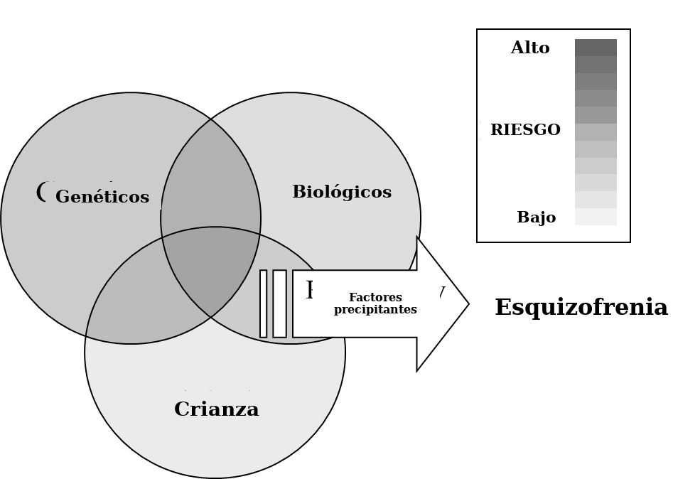
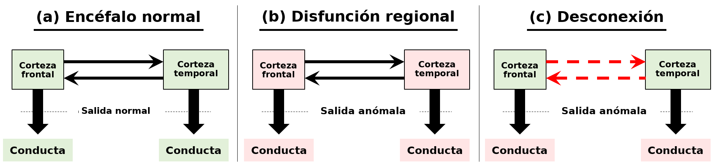

Esquizofrenia
Objetivos de aprendizaje
- Conocer los principales grupos de síntomas asociados con la esquizofrenia y los criterios diagnósticos que se utilizan.
- Conocer los fundamentos de las tres teorías bioquímicas principales de la esquizofrenia (dopamina, glutamato y serotonina).
- Comprender cómo el mecanismo de acción de los fármacos que afectan la conducta, y de los que se usan en el tratamiento de la esquizofrenia, ayuda a entender los cambios bioquímicos que ocurren en la enfermedad.
- Conocer las principales clases de fármacos que se usan para tratar la esquizofrenia, y sus ventajas y limitaciones.
Panorama de la esquizofrenia
La esquizofrenia es un trastorno mental grave y persistente que causa cambios profundos en los procesos sociales, emocionales y cognitivos, con un impacto importante en la vida cotidiana. Tiene una prevalencia del 0,3 al 0,7 % en el mundo y se caracteriza por alteraciones del pensamiento, la percepción, la conducta y la cognición. Estos síntomas suelen aparecer al final de la adolescencia y al comienzo de la adultez (de los 17 a los 30 años), y el inicio suele ser más temprano en los varones que en las mujeres.
Aunque el término esquizofrenia se acuñó recién en el siglo XIX, hay descripciones de síntomas parecidos a los de la esquizofrenia desde el antiguo Egipto, Grecia y China, y el examen de las manifestaciones de personas a las que se llamaba «poseídas» o «locas» sugiere que probablemente tenían esquizofrenia. En la Edad Media, las enfermedades mentales se separaban en cuatro categorías principales: idiocia, demencia, melancolía y manía. En esa época, manía era un término general que describía un estado de locura en el que la persona presentaba alucinaciones, delirios y alteraciones conductuales graves, y no el término diagnóstico más específico que se usa hoy (véase Trastornos del estado de ánimo).
El psiquiatra alemán Emil Kraepelin (1856-1926) encontró que esas categorías no ayudaban a entender la presentación, la progresión y el resultado de las enfermedades mentales. En la década de 1890 propuso agrupar síntomas asociados con resultados similares, que él creía que eran manifestaciones distintas de una sola enfermedad progresiva, a la que llamó dementia praecox, o demencia precoz, caracterizada por dementia paranoides, hebefrenia y catatonia. Sin embargo, en ese momento las ideas de Kraepelin no se aceptaban de forma amplia y, de hecho, muchos profesionales de la clínica se burlaban de ellas.
La adopción generalizada de estas ideas en la comunidad psiquiátrica puede atribuirse al trabajo del psiquiatra suizo Eugen Bleuler (1857-1939), publicado en 1911. Desarrolló las ideas diagnósticas de Kraepelin, pero conceptualizó la afección como un trastorno más psicológico, y no como el trastorno neuropatológico que concebía Kraepelin. Consideraba que las alucinaciones y los delirios, los rasgos clave descritos por Kraepelin, eran síntomas accesorios, y proponía que los síntomas centrales (cardinales) se relacionaban más con la anhedonia y el retraimiento social de la afección (síntomas negativos: véase más abajo), presentes en todos los casos. También acuñó el término esquizofrenia, porque creía que dementia praecox era engañoso. El nombre se refiere a una escisión de la mente y deriva del griego antiguo: schizo, escisión, y phren, la mente. Se refiere al pensamiento disociado y a la incapacidad de distinguir los estímulos generados en el exterior de los pensamientos generados en el interior: en particular, no se refería a la doble personalidad, que es un fenómeno psicológico completamente distinto.
En la década de 1950, otro psiquiatra alemán, Kurt Schneider (1887-1967), sostuvo que las alucinaciones, las alteraciones del pensamiento y los delirios (síntomas positivos), a los que llamó síntomas «de primer rango», eran los más relevantes. Los principios diagnósticos establecidos por Kraepelin, Bleuler y Schneider son la base de los sistemas de diagnóstico que se usan hoy: el Manual diagnóstico y estadístico de los trastornos mentales (DSM: Asociación Estadounidense de Psiquiatría) y la Clasificación Internacional de Enfermedades (CIE: Organización Mundial de la Salud).
Etiología de la esquizofrenia
Hoy está claro que no hay una sola causa de la esquizofrenia, sino que está determinada por la interacción entre factores genéticos, biológicos y sociales.
Factores genéticos
Estudios de comienzos del siglo XX mostraron que los familiares de personas con esquizofrenia tenían más probabilidad de desarrollar esquizofrenia que la población en su conjunto, lo que sugiere alguna influencia familiar y genética. Estudios más recientes con gemelos dicigóticos (mellizos) y monocigóticos mostraron una incidencia sustancialmente más alta de esquizofrenia en gemelos cuyo cogemelo tenía esquizofrenia.
Estudios de gemelos
La concordancia (porcentaje) en la esquizofrenia compara la tasa de incidencia entre dos personas. En los gemelos dicigóticos la concordancia es del 15 al 25 %: es decir, si un gemelo tiene esquizofrenia, hay una probabilidad del 15 al 25 % de que el otro también la tenga. En los gemelos monocigóticos, la tasa de concordancia es del 40 al 65 %.
Esto se compara con una tasa de concordancia en la población en su conjunto de aproximadamente el 0,3 al 0,7 %, lo que indica un componente genético hereditario claro de la vulnerabilidad. Sin embargo, dado que los gemelos dicigóticos comparten el 50 % de sus genes y los monocigóticos comparten el 100 %, las tasas de concordancia son considerablemente menores de lo que se esperaría si la esquizofrenia estuviera determinada por completo por la genética (50 % y 100 %, respectivamente). Los estudios de adopción mostraron que las tasas de concordancia en gemelos criados por separado eran similares, incluso cuando no sabían que eran gemelos. Además, los gemelos de progenitores biológicos sanos que fueron adoptados por padres de acogida, y en los que uno de estos últimos desarrolló después esquizofrenia, no tuvieron un riesgo mayor de desarrollar ellos mismos esquizofrenia. Por lo tanto, no son los factores sociales de la crianza los que influyen en las tasas de concordancia de los gemelos, sino la influencia genética.
Estos datos no indican que ser gemelo sea un factor de riesgo para desarrollar esquizofrenia: la tasa de concordancia entre los gemelos es la misma que en la población en su conjunto. Lo que muestran es que, si un gemelo tiene esquizofrenia, el otro tiene una probabilidad más alta de lo normal de tenerla también.
Se piensa que los factores genéticos aportan aproximadamente el 50 % de la vulnerabilidad a la esquizofrenia, y los enfoques de genética molecular de las últimas tres décadas buscaron identificar genes específicos o grupos de genes involucrados en esa susceptibilidad. Se identificaron varios genes candidatos, aunque su participación precisa en el desarrollo de la esquizofrenia todavía es incierta. Sin embargo, es improbable que un solo gen sea responsable de la vulnerabilidad; más bien se trata de una combinación de genes a lo largo del genoma. Esto puede explicar, en alguna medida, la variación en la presentación de la enfermedad entre distintas personas, si la combinación de genes de «vulnerabilidad» es diferente en cada una.
Factores biológicos
Se propusieron varios factores de riesgo biológicos, entre ellos complicaciones del embarazo y del parto, infección materna durante el embarazo y, posiblemente, infecciones o exposición a toxinas durante el desarrollo. Sin embargo, todavía hay una incertidumbre considerable sobre la contribución relativa de cualquiera de estos factores, o sobre cómo influyen exactamente en la progresión de la enfermedad.
Si se miran primero las complicaciones del embarazo, hay evidencia de que la infección materna, en particular durante el segundo trimestre, se correlaciona con una mayor probabilidad de desarrollar esquizofrenia. Quienes nacen en primavera (marzo y abril en el hemisferio norte, y septiembre y octubre en el hemisferio sur), cuando el segundo trimestre coincide con los meses de invierno en los que las infecciones virales están en su pico, tienen una incidencia más alta que quienes nacen fuera de esos meses. Además, hay una incidencia alta de la enfermedad en quienes nacieron poco después de grandes epidemias de gripe: queda por verse qué impacto tendrá la pandemia de COVID-19 en la incidencia futura de la esquizofrenia. Este efecto puede estar mediado por citocinas proinflamatorias, de las que se mostró que alteran el neurodesarrollo fetal, en particular durante el período de alta proliferación y especialización del segundo trimestre. De manera similar, se informa que la escasez de alimentos o la desnutrición, en particular al comienzo del embarazo, y la deficiencia materna de vitamina D durante el embarazo aumentan el riesgo.
El trauma del parto también se identificó como factor de riesgo. El trabajo de parto prematuro y el bajo peso al nacer se asocian con un riesgo aumentado, aunque ambos pueden ser resultado de complicaciones del embarazo y no de complicaciones del parto per se. Sin embargo, la asfixia durante el parto también se identificó como factor de riesgo, y hay una incidencia alta en bebés nacidos con fórceps: esto podría deberse al trauma del uso del fórceps, o podría ser el resultado de la complicación del parto que hizo necesario usarlo.
Factores sociales
Hubo mucha atención sobre si el trauma infantil, como la disfunción de la unidad familiar, la negligencia o el abuso sexual, físico o emocional, aumenta la probabilidad de desarrollar esquizofrenia más adelante. Si bien ese trauma sin duda aumenta la gravedad de un episodio de esquizofrenia y el malestar de la persona, y predice una peor evolución a largo plazo, es discutible si hay un vínculo causal entre el trauma infantil y la esquizofrenia.
El entorno urbano también se propuso como factor de riesgo: se informó una incidencia aumentada de esquizofrenia en personas que crecieron en entornos urbanos, lo que sugiere que condiciones sociales como el hacinamiento, la adversidad social, el aislamiento social y la vivienda precaria pueden influir en la incidencia de la afección. Sin embargo, el entorno urbano a menudo se asocia con la pobreza y una mala alimentación, que pueden ofrecer una explicación más biológica y menos social del aumento de la incidencia. De manera similar, en un entorno urbano es más probable una exposición más alta a toxinas (por ejemplo, el plomo) que en un entorno más rural. Así, aunque los factores sociales no pueden descartarse, hacen falta más estudios, en particular con diseños longitudinales, para identificar relaciones específicas.
Factores precipitantes
Las personas con vulnerabilidades genéticas, biológicas y sociales, incluso las del grupo de alto riesgo, no necesariamente llegan a tener un episodio de esquizofrenia. Los factores precipitantes son, en cambio, desencadenantes que evocan la esquizofrenia en personas que están en riesgo (Figura 6.8). El desencadenante principal que se identificó es el estrés, a menudo producido por acontecimientos vitales traumáticos, como el duelo, un accidente, la ruptura de una relación, el desempleo, la falta de vivienda o el abuso. Es importante que estos factores no alcanzan por sí solos para desencadenar un episodio de esquizofrenia, pero pueden desencadenarlo en personas que ya tienen una vulnerabilidad. También es posible que los cambios premórbidos que ocurren antes del primer episodio psicótico (véase más abajo) alteren la percepción que la persona tiene de los acontecimientos traumáticos, o su capacidad de enfrentarlos, de modo que la esquizofrenia previa al diagnóstico puede agravar el impacto de los acontecimientos que cambian la vida, y no al revés.

Neurodegeneración y neurodesarrollo
Vimos que las principales vulnerabilidades para la esquizofrenia se establecen muy temprano en el desarrollo, durante el embarazo, el parto y la primera infancia, y sin embargo el resultado —un episodio de esquizofrenia— normalmente ocurre al comienzo de la adultez, unos 15 a 20 años después. Esto sugiere una etiología del neurodesarrollo, en la que un desarrollo anómalo queda «al descubierto» por cambios que ocurren en la adultez. La hipótesis del neurodesarrollo también se apoya en evidencia estructural de los encéfalos de personas con esquizofrenia, en los que el volumen cortical es menor que en los participantes del grupo de control. Es importante que esta pérdida aparente de tejido cortical no se acompaña de aumentos significativos de células gliales (que ocurren con la neurodegeneración), lo que indica que la reducción no se debe a degeneración y respalda una explicación del neurodesarrollo.
El desarrollo del encéfalo es un proceso rápido y extremadamente complejo, y es susceptible al daño de muchas fuentes. El período principal de vulnerabilidad empieza en el segundo trimestre del embarazo, cuando la neurogénesis y la migración neuronal están en su pico, y continúa durante el embarazo tardío, el parto y la primera infancia, cuando ocurre la sinaptogénesis. El estrés durante este período, incluida la inflamación, la desnutrición o las sustancias, tiene un impacto importante en el desarrollo del encéfalo fetal, que puede llevar a anomalías del desarrollo y, con ellas, a una vulnerabilidad a la esquizofrenia. Sin embargo, todavía no comprendemos bien cuáles son esos cambios del neurodesarrollo, cómo se desencadenan, cómo influyen en ellos los factores genéticos, biológicos y sociales, ni cómo progresan hasta dejar a la persona vulnerable a la esquizofrenia.
Aunque el conjunto de la evidencia sugiere una base de neurodesarrollo para las anomalías encefálicas de la esquizofrenia, también hay alguna evidencia de neurodegeneración. Los episodios psicóticos parecen aumentar de gravedad con el tiempo, y la respuesta a la medicación antipsicótica disminuye con el tiempo, lo que sugiere un mecanismo progresivo de neurodegeneración. Se propuso que tener un episodio psicótico puede dañar el encéfalo, lo que explicaría la mayor probabilidad y gravedad de los episodios posteriores. Si es así, se destaca la importancia de la intervención temprana para evitar que se desarrollen episodios psicóticos. En este contexto, es interesante que evidencia reciente sugiera que tanto los síntomas negativos como los cognitivos pueden preceder a los síntomas positivos, y pueden actuar como un marcador premórbido de las personas que están en riesgo. Esto abre la posibilidad de intervenciones psicológicas antes del inicio de un episodio psicótico.
La hipótesis de la desconexión en la esquizofrenia (Friston & Frith, 1995)
Muchos estudios mostraron anomalías tanto estructurales como funcionales en los encéfalos de personas con esquizofrenia.
Las teorías clásicas de la esquizofrenia sugieren que la función alterada se explica por cambios patológicos en áreas encefálicas localizadas específicas, y que el tipo de disfunción que se presenta (es decir, los síntomas) depende de las áreas particulares dañadas.
La teoría de la desconexión, en cambio, propone una desregulación de la conectividad entre regiones de las redes neurales. Aunque las áreas pueden parecer normales tanto en lo estructural como en lo funcional, sus interacciones dentro de las redes neurales que controlan la conducta son anómalas, por una falla en establecer un patrón adecuado de conexión sináptica. Esta idea también es compatible con los procesos neurogenerativos que ocurren durante el segundo trimestre, cuando la vulnerabilidad al daño parece ser máxima, porque es el momento principal de la migración neuronal y marca el comienzo de la sinaptogénesis.
La desconexión, por lo tanto, causa una falla de la integración funcional adecuada entre regiones, y no disfunciones específicas de las regiones mismas. Así, la anomalía se expresa como una salida de ciertas regiones del encéfalo que dependen de la actividad de otras áreas, y las respuestas anómalas solo se verían cuando la actividad específica involucrara interacciones con otras partes del encéfalo: por ejemplo, las conductas controladas en la corteza frontal están moduladas por información incorrecta que llega desde la corteza temporal. La distinción importante se resume como la distinción entre «la interacción patológica de dos áreas corticales y la interacción, por lo demás normal, de dos áreas patológicas» (Friston, 1998, p. 116; traducción propia).

Síntomas
La presentación de la esquizofrenia es muy diversa: dos personas, ambas con diagnóstico de esquizofrenia, pueden mostrar un espectro de síntomas muy distinto. Incluso en una misma persona, los síntomas pueden cambiar con el tiempo, de modo que la presentación de un mes al siguiente puede ser diferente.
En un principio, los síntomas se dividían en dos grupos: síntomas positivos (tipo 1), caracterizados por una exacerbación de la conducta normal, y síntomas negativos (tipo 2), caracterizados por una supresión de la conducta normal. Más recientemente quedó claro que hay un tercer grupo, los síntomas cognitivos, caracterizados por cambios en la función ejecutiva cognitiva. Cabe señalar que los síntomas negativos y cognitivos probablemente preceden el inicio de los síntomas psicóticos (positivos) y se mantienen estables a lo largo de la enfermedad en la mayoría de las personas: en general no responden bien al tratamiento y a menudo persisten después de la recuperación de un episodio psicótico agudo.
Síntomas positivos
Los síntomas positivos se manifiestan como un aumento o una exageración de la conducta normal, en la que la persona pierde el contacto con la realidad (psicosis). Los síntomas más frecuentes de este dominio son las alucinaciones, los delirios y los pensamientos anómalos y desorganizados. Son, en esencia, los síntomas a los que Schneider se refería como «síntomas de primer orden», y a menudo son el primer signo notable de la enfermedad.
Alucinaciones (percibir cosas que no están) es el síntoma más frecuente, y lo experimenta alrededor del 75 % de las personas que viven con esquizofrenia. Lo más habitual es que ocurran en la modalidad auditiva, en la que las personas «oyen voces», que pueden comentar lo que están haciendo y/o dar órdenes. Las voces suelen parecer enojadas o insultantes, y a menudo exigentes, aunque a veces pueden ser neutras. Las personas también pueden tener alucinaciones visuales, somatosensitivas u olfatorias, en las que ven, sienten u huelen (respectivamente) objetos o personas que en realidad no están presentes. Aunque no necesariamente incapacitan para la vida cotidiana, experimentar alucinaciones puede asustar y angustiar a la persona.
Los delirios son creencias falsas que no desaparecen, ni siquiera ante evidencia de que no son verdaderas. A menudo se asocian con percepciones delirantes (delirios de referencia), en las que una percepción normal adquiere un significado específico y erróneo. Esto puede reflejar, a su vez, alteraciones de la atribución de saliencia, es decir, asignar una importancia inapropiada a estímulos poco importantes. El tipo más frecuente son los delirios persecutorios, en los que la persona cree que otras personas, incluidos amigos cercanos o familiares, actúan en su contra, a menudo asociados con organizaciones grandes como el gobierno, el MI5 o la CIA. Esto lleva a una desconfianza extrema hacia las personas, con frecuencia hacia quienes intentan ayudarla. Sin embargo, las personas también experimentan delirios de grandeza, en los que creen que son excepcionalmente talentosas o famosas; delirios somáticos, en los que creen que están enfermas o deformadas; y delirios de control, en los que creen que sus pensamientos están controlados por una fuerza externa (inserción, robo y difusión del pensamiento). La forma específica del delirio suele estar influida por el modo de vida de la persona, sus acontecimientos vitales y su entorno social.
El pensamiento desorganizado, o trastorno formal del pensamiento, se manifiesta normalmente como un habla desorganizada, en la que el discurso está fragmentado y carece de progresión lógica. A menudo incluye palabras inexistentes (neologismos) y conducta desorganizada, en la que la persona muestra una conducta inusual e impredecible y puede tener respuestas emocionales inapropiadas. En su forma más grave, la narración se vuelve un revoltijo completamente incoherente de palabras y neologismos, a veces llamado «ensalada de palabras», que refleja procesos de pensamiento gravemente desorganizados y pobreza del contenido del pensamiento.
Hay evidencia sólida de que la sintomatología positiva se relaciona con la disfunción del lóbulo temporal y con anomalías de la función dopaminérgica en los núcleos basales (ganglios basales), en particular en la vía mesolímbica, que quizá reflejen una desregulación de las acciones glutamato-dopamina en la salida de la corteza temporal. Los síntomas positivos responden razonablemente bien a la medicación antipsicótica, que reduce la función dopaminérgica, lo que subraya la importancia de los sistemas dopaminérgicos en su generación.
Síntomas negativos
Los síntomas negativos se manifiestan como un retraimiento social general, una menor capacidad de respuesta afectiva (embotamiento emocional), falta de interés (apatía), de deseo (avolición) y de motivación (abulia), y menor placer (anhedonia). En su extremo, esto puede llevar al mutismo (no hablar) y a la catatonia (inmovilidad), a menudo durante períodos prolongados. Los síntomas negativos pueden estar presentes en la fase premórbida, antes del primer episodio psicótico, pero también pueden aparecer durante un episodio psicótico o después. Los mecanismos encefálicos que subyacen a los síntomas negativos todavía no se comprenden bien, aunque se implica a anomalías de la corteza frontal y, como no responden bien al tratamiento, son un componente particularmente incapacitante de la afección.
Síntomas cognitivos
Los síntomas cognitivos abarcan varias dificultades de aprendizaje, memoria, atención, planificación y resolución de problemas. Las alteraciones cognitivas ocurren en la mayoría de las personas con esquizofrenia, si no en todas, y pueden ser extremadamente graves y persistentes. De hecho, el grado de alteración cognitiva contribuye de manera sustancial a la incapacitación a largo plazo y es un buen predictor de la evolución. Los cambios cognitivos normalmente ocurren antes del primer episodio psicótico, y pueden contribuir a las percepciones y a la atribución anómalas de la persona, que después se manifiestan como síntomas positivos. Como los síntomas negativos, los cognitivos probablemente se originan en una disfunción de la corteza frontal, y en general no responden bien al tratamiento antipsicótico, lo que destaca una necesidad clínica de mejores estrategias de tratamiento.
Diagnóstico de la esquizofrenia
El diagnóstico de la esquizofrenia usa sobre todo una de dos herramientas diagnósticas:
- Manual diagnóstico y estadístico de los trastornos mentales (DSM: Asociación Estadounidense de Psiquiatría)
- Clasificación Internacional de Enfermedades (CIE: Organización Mundial de la Salud)
Ambos tuvieron varias versiones.
En el Reino Unido, la CIE es la más usada. Las versiones tempranas de la CIE y del DSM mostraban varias diferencias importantes en la conceptualización de la esquizofrenia y en los criterios diagnósticos, lo que llevaba a diagnósticos distintos entre los países que usaban la CIE (por ejemplo, el Reino Unido) y el DSM (por ejemplo, Estados Unidos). Sin embargo, las versiones más recientes de cada uno, la CIE-11 (2019) y el DSM-5 (2013), tienen criterios diagnósticos muy similares, lo que mejora la consistencia y la aplicabilidad a la práctica clínica.
Diagnóstico de la esquizofrenia (CIE-11)
Deben estar presentes al menos dos de los siguientes síntomas (según el relato de la persona o la observación del profesional de la clínica u otros informantes) la mayor parte del tiempo durante un período de 1 mes o más. Al menos uno de los síntomas que cumplen el criterio debe pertenecer a los ítems a) a d):
a. Delirios persistentes (por ejemplo, de grandeza, de referencia, persecutorios).
b. Alucinaciones persistentes (lo más habitual es que sean auditivas, pero pueden corresponder a cualquier modalidad sensorial).
c. Pensamiento desorganizado (trastorno formal del pensamiento). Cuando es grave, el habla de la persona puede ser tan incoherente que resulta incomprensible («ensalada de palabras»).
d. Experiencias de influencia, pasividad o control (es decir, la experiencia de que los propios sentimientos, impulsos, acciones o pensamientos no los genera uno mismo).
e. Síntomas negativos (por ejemplo, aplanamiento afectivo, alogia, avolición, asocialidad, anhedonia).
f. Conducta muy desorganizada que impide la actividad dirigida a un objetivo (por ejemplo, conducta extraña, sin propósito o impredecible; respuestas emocionales inapropiadas). Alteraciones psicomotoras como inquietud catatónica, adopción de posturas, negativismo, mutismo o estupor.
g. Los síntomas no son una manifestación de otra afección médica y no se deben a los efectos de una sustancia o un medicamento sobre el sistema nervioso central, incluidos los efectos de la abstinencia.
Source: World Health Organization (2019). International Statistical Classification of Diseases and Related Health Problems (11th ed.). https://icd.who.int/ Traducción propia de los criterios.
Cambios de la estructura encefálica en la esquizofrenia
Aunque se informaron muchos cambios de la estructura encefálica en la esquizofrenia, no se identificó una anomalía característica única. Los cambios más consistentes que se observaron son una reducción del volumen encefálico global, en particular de la sustancia gris, un adelgazamiento cortical y un aumento del tamaño de los ventrículos. Sin embargo, estos cambios también se ven en el envejecimiento normal y en otras enfermedades encefálicas, de modo que no son exclusivos de la esquizofrenia.
En particular, se observó adelgazamiento cortical en la corteza prefrontal, un área importante para el pensamiento lógico, la inferencia, la resolución de problemas y la memoria de trabajo, lo que quizá explique la prevalencia de pensamientos desorganizados y de alteraciones de la función ejecutiva y de la memoria de trabajo en las personas con esquizofrenia. Esta idea se apoya en observaciones de estudios de imágenes funcionales, que muestran una actividad reducida de la corteza prefrontal cuando las personas con esquizofrenia realizan tareas cognitivas.
Las estructuras del lóbulo temporal medial, incluida la corteza entorrinal y el hipocampo, también son importantes para la atención y la memoria de trabajo, y los estudios de imágenes también mostraron un volumen tisular reducido en estas áreas. Además, tanto la corteza temporal como la corteza prefrontal tienen una conectividad sustancial con los núcleos basales, incluido el núcleo accumbens (estriado ventral), un área críticamente involucrada en la detección de saliencia y en la selección de la respuesta.
Así, es posible que la interrupción de la transmisión dopaminérgica en el núcleo accumbens, quizá bajo una dirección anómala de las aferencias de la corteza temporal y frontal, subyazca a los déficits de atribución de saliencia (atribución inapropiada de importancia a estímulos irrelevantes) que se ven en la esquizofrenia. Cabe señalar que la dopamina es un neurotransmisor crítico en el núcleo accumbens, lo que puede explicar la eficacia de los antagonistas dopaminérgicos para tratar estos síntomas.
Por lo tanto, aunque todavía no sabemos con precisión qué cambios estructurales hay en los encéfalos de las personas con esquizofrenia, hay evidencia sustancial de estudios de imágenes recientes, que empieza a darnos indicios de cómo cambios sutiles de la conectividad encefálica pueden traducirse en los tipos de disfunción que se ven en la esquizofrenia.
Teorías bioquímicas de la esquizofrenia
Hay evidencia sólida de que ciertas drogas, entre ellas la cocaína, la anfetamina, la fenciclidina y la dietilamida del ácido lisérgico (LSD), pueden causar cambios agudos y transitorios que se parecen a aspectos de la esquizofrenia. Además, estas drogas exacerban los síntomas en las personas con esquizofrenia y pueden desencadenar una recaída en quienes se están recuperando de un episodio previo. Estos efectos de las drogas dan indicios de los cambios neuroquímicos que pueden subyacer a la esquizofrenia, y fueron la base de las teorías bioquímicas. De hecho, también proporcionaron modelos animales para estudiar los mecanismos que subyacen a la esquizofrenia y para desarrollar mejores fármacos.
La teoría dopaminérgica postula que la esquizofrenia está causada por un aumento de la función dopaminérgica subcortical, en particular en la vía dopaminérgica mesolímbica, que se proyecta desde el área tegmental ventral del mesencéfalo hacia áreas del prosencéfalo límbico, sobre todo el núcleo accumbens, pero también el hipocampo y la amígdala. La teoría dopaminérgica se basa en tres observaciones principales:
- primero, que los fármacos que aumentan la función dopaminérgica, entre ellos la anfetamina, la cocaína y la L-DOPA (usada en el tratamiento de la enfermedad de Parkinson), causan síntomas parecidos a los de la esquizofrenia;
- segundo, que la primera generación de fármacos usados para tratar la esquizofrenia (antipsicóticos típicos) son antagonistas de los receptores de dopamina;
- y tercero, hay alguna evidencia de una perturbación de la señalización dopaminérgica en encéfalos post mórtem de personas con esquizofrenia, aunque esto puede derivar de los cambios adaptativos del cuerpo en respuesta al tratamiento prolongado con fármacos dopaminérgicos.
Si bien hay mucho respaldo empírico para la teoría dopaminérgica, hay limitaciones fundamentales que indican que, aunque los sistemas dopaminérgicos participan, la teoría dopaminérgica no puede dar una explicación completa de la esquizofrenia.
Si se mira esto con más detalle, los fármacos dopaminomiméticos, como la anfetamina, causan cambios conductuales en personas sin la enfermedad que se parecen a algunos aspectos de la esquizofrenia. Sin embargo, los cambios se limitan a conductas que se parecen solo a los síntomas positivos, incluidas las alucinaciones, los delirios y el trastorno del pensamiento, y no evocan cambios que se parezcan a los síntomas negativos o cognitivos. Por lo tanto, aunque aumentar la función dopaminérgica evoca cambios conductuales parecidos a la esquizofrenia, no causa el espectro completo de la sintomatología, sino solo aquello que se parece a los síntomas positivos. De manera similar, los antipsicóticos típicos, que actúan solo sobre los receptores de dopamina, son moderadamente eficaces para tratar los síntomas positivos, pero son muy poco eficaces para tratar los síntomas negativos o cognitivos: de hecho, hay alguna evidencia de que estos antipsicóticos típicos pueden exacerbar los síntomas negativos y cognitivos, posiblemente por acciones en la corteza frontal, donde se informó que la señalización dopaminérgica está reducida en la esquizofrenia.
La señalización dopaminérgica como vía final común
En su formulación original, la teoría dopaminérgica de la esquizofrenia postulaba una hiperactividad general de la dopamina en la esquizofrenia. En un refinamiento posterior, se pensó que solo la dopamina subcortical estaba hiperactiva, con una hipoactividad dopaminérgica en la corteza prefrontal, lo que daba cuenta de la observación de que los antagonistas de los receptores de dopamina (la medicación antipsicótica típica) exacerban los síntomas negativos y cognitivos. Sin embargo, incluso esta conceptualización tiene limitaciones, y no explica cómo los factores de riesgo se traducen en los síntomas y en el curso temporal de la esquizofrenia.
En su reconceptualización de la hipótesis dopaminérgica, a la que llaman «versión III: la vía final común», Oliver Howes y Shitij Kapur (2009) reúnen datos recientes de la genética, la biología molecular y los estudios de imágenes para ofrecer un marco que dé cuenta de estas anomalías.
Los estudios de imágenes moleculares muestran aumentos de la actividad de las neuronas dopaminérgicas en la esquizofrenia, lo que implica que la anomalía está en la entrada a las neuronas dopaminérgicas y no en la salida desde ellas. Cabe señalar que se mostró que la disfunción tanto de la corteza frontal como de la temporal aumenta la liberación de dopamina mesolímbica, lo que sugiere que las anomalías centrales de estas áreas pueden modificar una función dopaminérgica crítica.
Así, la función anómala de múltiples aferencias lleva a la desregulación dopaminérgica como vía final común: las distintas manifestaciones conductuales que se ven en la esquizofrenia pueden deberse a la combinación concreta de aferencias disfuncionales al sistema dopaminérgico en cada persona. Además, dentro de este marco, el daño subyacente podría estar en las áreas encefálicas que envían proyecciones a las neuronas dopaminérgicas, o en las conexiones mismas (véase la hipótesis de la desconexión).
Cabe señalar que los sistemas dopaminérgicos mesolímbicos participan en la atribución de saliencia; por lo tanto, la desregulación de la actividad de esta vía daría como resultado una atribución de saliencia anómala, que puede subyacer a la sintomatología positiva.
Por lo tanto, un objetivo importante para el desarrollo futuro de fármacos es apuntar a los mecanismos que convergen en los sistemas dopaminérgicos, que son anómalos en la esquizofrenia, y no a los sistemas dopaminérgicos mismos, que son el blanco de los antipsicóticos actuales. Esto, a su vez, depende de una comprensión más completa de qué sistemas participan.
El glutamato es el neurotransmisor excitatorio más prevalente del encéfalo de los mamíferos, y actúa en varios tipos de receptores. Los antagonistas no competitivos de uno de esos tipos de receptores, el receptor NMDA (por ejemplo, la fenciclidina, la ketamina y la dizocilpina [MK-801]), causan cambios conductuales en personas sin la enfermedad que se parecen a la esquizofrenia. Además, cuando se administran a personas con esquizofrenia, exacerban los síntomas, lo que aporta evidencia de que la acción del fármaco imita el estado de la enfermedad. Por lo tanto, esto implica que una hipoactividad del glutamato, en particular en los receptores NMDA, puede subyacer a la esquizofrenia. Es importante que, a diferencia de los fármacos dopaminérgicos, que provocan conductas parecidas solo a los síntomas positivos, los antagonistas del receptor NMDA generan cambios conductuales que se parecen a síntomas de los tres dominios —positivos, negativos y cognitivos—, lo que implica que la desregulación del glutamato es el déficit central de la esquizofrenia y que las anomalías dopaminérgicas son posteriores a ese déficit central. También hay un conjunto de evidencia que muestra cambios en la función del glutamato en los encéfalos de personas con esquizofrenia, incluidos niveles reducidos de glutamato y un aumento de la unión cortical de glutamato en encéfalos post mórtem, y una densidad aumentada de receptores de glutamato en encéfalos de personas vivas.
Otros transmisores implicados en la esquizofrenia son la serotonina y el ácido gamma-aminobutírico (GABA). La dietilamida del ácido lisérgico (LSD), un agonista de los receptores de serotonina, es una droga que se consume de forma recreativa y causa distorsiones de la realidad y alucinaciones parecidas a los síntomas positivos de la esquizofrenia, lo que implica una hiperactividad serotoninérgica en la esquizofrenia. Esto es compatible con la acción farmacológica de los antipsicóticos atípicos (de segunda generación), muchos de los cuales son antagonistas del receptor 5-HT2. Sin embargo, hay poca o ninguna evidencia de anomalías de la función serotoninérgica en los encéfalos de las personas con esquizofrenia. También se mostró que la señalización cortical del GABA es disfuncional en los encéfalos de las personas con esquizofrenia, pero no está claro cómo esto repercute en la función cortical hasta producir los síntomas de la esquizofrenia.
Tratamiento
Evolución social y clínica
Sin intervención farmacológica, alrededor del 20 % de las personas con esquizofrenia se recupera bien, aunque es probable que nunca muestren una recuperación completa; de ahí que a menudo se use la expresión «recuperación casi completa».
Con intervención farmacológica, esta cifra sube a alrededor del 50 %, que muestra una recuperación casi completa y puede vivir de forma independiente o con la familia. Otro 25 % muestra una recuperación moderada, pero todavía necesita un apoyo sustancial: estas personas en general viven en viviendas supervisadas, residencias de cuidados o hospitales. El resto muestra poca o ninguna mejoría.
En particular, los síntomas negativos y cognitivos no responden bien al tratamiento, y a menudo constituyen las disfunciones a largo plazo más incapacitantes.
(Datos de Torrey, 2001)
Hasta hace relativamente poco no había tratamientos eficaces para la esquizofrenia. En el siglo XIX y comienzos del XX, a las personas que la presentaban se las internaba por lo general en manicomios, con poca o ninguna forma de tratamiento y con poca o ninguna comunicación con el mundo exterior. Cuando se ofrecían tratamientos, incluían el tratamiento de choque (choque insulínico, choque con pentilentetrazol [Metrazol] y choque electroconvulsivo [TEC]) e incluso la lobotomía frontal (una sección de las neuronas que conectan los lóbulos frontales con el resto del encéfalo). Ambos eran gravemente incapacitantes y tenían una eficacia limitada para tratar la enfermedad. En esa situación, las personas rara vez mostraban algún tipo de recuperación: de hecho, su afección a menudo empeoraba durante el encierro.
Antipsicóticos típicos
El fármaco clorpromazina es un tranquilizante potente, usado para manejar la recuperación después de la anestesia quirúrgica. Las personas que lo tomaban informaban una sensación de bienestar y calma. Sobre esa base, durante la década de 1950 se lo probó en personas con esquizofrenia, que a menudo presentaban una agitación extrema. Se encontró que aliviaba algunos de los síntomas de la esquizofrenia, en particular las alucinaciones, los delirios y el pensamiento desorganizado —todos síntomas del dominio positivo—, incluso con una dosis mucho menor que la necesaria para la acción tranquilizante.
Desde el punto de vista farmacológico, la clorpromazina es un antagonista de los receptores de dopamina, con cierta selectividad por los receptores de tipo D2 (D2, D3, D4) en comparación con los de tipo D1 (D1, D5), aunque en ese momento nadie sabía cuál era la farmacología del fármaco: de hecho, pasó otra década hasta que se reconoció que la dopamina es un neurotransmisor. Tampoco era eficaz en todas las personas, ni contra todos los síntomas, y se asociaba con algunos efectos adversos incapacitantes. Sin embargo, en ese momento (mediados de la década de 1950) constituyó un avance importante, como el primer tratamiento farmacológico de la esquizofrenia.
Después del descubrimiento del efecto antipsicótico de la clorpromazina, se probaron muchos otros antagonistas de los receptores de dopamina de tipo D2 como posibles antipsicóticos. Esto llevó al desarrollo de toda una clase de antipsicóticos: los típicos, o de primera generación. De ellos, el haloperidol es hoy el antipsicótico típico de elección, aunque hay varios otros antipsicóticos típicos también autorizados para su uso en el Reino Unido (por ejemplo, flupentixol, pimozida, sulpirida), que se convirtieron en el pilar del tratamiento farmacológico de la esquizofrenia durante las décadas de 1970 y 1980. En un principio, a estos fármacos se los llamaba neurolépticos, porque inducían neurolepsis (inmovilidad asociada con su acción de tranquilizante mayor). Ahora se los llama antipsicóticos, lo que refleja la reducción de los síntomas psicóticos con dosis mucho menores que las usadas para inducir neurolepsis. Su eficacia antipsicótica es resultado directo de su acción antagonista en los receptores dopaminérgicos D2.
Sin embargo, el tratamiento con antipsicóticos típicos tiene varios inconvenientes. En primer lugar, no son muy eficaces: alrededor del 25 % de las personas no responde en absoluto al tratamiento, y otras (alrededor del 25 %) muestran alguna mejoría, pero todavía presentan una sintomatología sustancial. En particular, los antipsicóticos típicos muestran poca o ninguna eficacia para tratar los síntomas negativos o cognitivos; son eficaces sobre todo solo en los síntomas positivos. Por lo tanto, aunque el tratamiento puede aliviar los síntomas positivos, las personas quedan con síntomas negativos y cognitivos residuales y potencialmente muy incapacitantes.
Otro inconveniente principal de los antipsicóticos típicos es que producen efectos adversos sedantes y motores en la mayoría de las personas. Los más incapacitantes son los efectos adversos motores, incluidos el temblor de reposo y la acatisia (parecidos a los que se ven en la enfermedad de Parkinson) y la discinesia tardía: cada uno ocurre en alrededor del 25 % de las personas que toman medicación antipsicótica típica. Están causados por el antagonismo de los receptores D2 en el estriado dorsal (núcleo caudado y putamen), que se parece al agotamiento de dopamina que se ve en estas áreas en la enfermedad de Parkinson. Cabe señalar que los efectos adversos parkinsonianos se recuperan al retirar los fármacos, pero la discinesia tardía no, y la función motora se deteriora de forma progresiva e irreversible si se continúa la medicación. Por último, el efecto antipsicótico de estos fármacos no es inmediato, sino que tarda varias semanas en establecerse, lo que crea un retraso sustancial entre el inicio del tratamiento y el control de los síntomas.
Antipsicóticos atípicos
En la búsqueda de antidepresivos parecidos al antidepresivo tricíclico imipramina se descubrieron varios fármacos con propiedades antipsicóticas: uno de ellos fue la clozapina. En marcado contraste con otros antipsicóticos usados en ese momento, la clozapina tenía una buena potencia antipsicótica, pero con efectos adversos motores mínimos, y por esa razón se la llamó antipsicótico atípico (también conocido como antipsicótico de segunda generación). Después se encontró que, además de los síntomas positivos, es al menos algo eficaz para tratar los síntomas negativos y cognitivos, y que es eficaz en algunas personas que no responden a otros antipsicóticos. También desde el punto de vista farmacológico es bastante distinta de los antipsicóticos típicos, que son antagonistas del receptor D2: la clozapina tiene una farmacología amplia, con efectos en receptores de dopamina, serotonina, acetilcolina, noradrenalina e histamina. La clozapina se introdujo como medicación antipsicótica a comienzos de la década de 1970, pero se retiró unos años después, cuando un estudio finlandés informó una incidencia alta de trastornos sanguíneos graves y potencialmente mortales, agranulocitosis y leucopenia. Sin embargo, después de estudios extensos se concluyó que la aparición de agranulocitosis (1 %) y neutropenia (3 %) en las personas que toman clozapina es relativamente baja, en particular más allá de las 18 semanas desde el inicio del tratamiento, y se la reintrodujo en el mercado en la década de 1990, con controles estrictos de monitoreo. Así, en el Reino Unido, las personas tienen que hacerse análisis de sangre todas las semanas durante las primeras 18 semanas de tratamiento, después cada dos semanas hasta el final del primer año de tratamiento y cada cuatro semanas a partir de entonces. Si hay algún signo de agranulocitosis o leucopenia, el fármaco tiene que retirarse de forma permanente. Este monitoreo aumenta de manera sustancial tanto la incomodidad para la persona como el costo económico y, por lo tanto, aunque la clozapina sigue siendo el antipsicótico disponible más eficaz, solo se usa en los casos en los que otros medicamentos no funcionaron.
El descubrimiento de la eficacia de la clozapina inició un enfoque nuevo para desarrollar antipsicóticos novedosos. En lugar de centrarse en los antagonistas del receptor D2, se probaron fármacos con una farmacología mucho más amplia. De este enfoque derivaron varios antipsicóticos atípicos más, entre ellos la olanzapina, hoy el tratamiento de primera línea, la quetiapina, la risperidona y la lusaridona. Aunque en su mayoría tienen una variedad de efectos farmacológicos, la acción común de estos fármacos y de la clozapina son efectos antagonistas potentes tanto en los receptores D2 como en los 5-HT2: se cree que esta acción dual subyace a las acciones antipsicóticas.
Aunque estos fármacos no son mucho más eficaces para tratar los síntomas positivos —incluso la clozapina solo es eficaz en alrededor del 85 % de las personas—, sí tienen alguna eficacia limitada para tratar los síntomas negativos y cognitivos, y causan pocos o ningún efecto adverso motor. Sin embargo, su uso sigue limitado por otros efectos adversos, entre ellos un aumento sustancial de peso y una salivación excesiva. Además, sus efectos pueden ser bastante variables, y normalmente son significativamente más lentos en el inicio que los antipsicóticos típicos.
Antipsicóticos de tercera y cuarta generación
Los antipsicóticos de tercera generación, por ejemplo el aripiprazol, el brexpiprazol y la cariprazina, son agonistas parciales del receptor D2, y no antagonistas plenos, lo que significa que, cuando los niveles de dopamina endógena son altos, los fármacos reducen su efecto, pero cuando son bajos los fármacos lo aumentan. También tienen acciones sobre las vías de segundos mensajeros para modular las acciones en los receptores D2. Por lo tanto, tienen un efecto «estabilizador» de la dopamina. Algunos también tienen acciones de agonista parcial de la 5-HT. En general son tan eficaces como otros antipsicóticos, pero con menos efectos adversos y se toleran mejor. Sin embargo, todavía no son muy eficaces para tratar los síntomas negativos y cognitivos. Un control adecuado de los síntomas negativos y cognitivos, que son posiblemente los síntomas más generalizados y disruptivos de la esquizofrenia, es hoy una necesidad clínica no cubierta, y varios enfoques terapéuticos alternativos están en etapa experimental, ya sea en pruebas preclínicas o en ensayos clínicos, con el objetivo de apuntar a acciones más allá de los receptores de dopamina y de serotonina. Entre ellos hay fármacos que modulan la función del glutamato, fármacos que actúan sobre los sistemas de acetilcolina y fármacos dirigidos a un grupo de compuestos reguladores llamados aminas traza.
Terapia psicológica
Hay varias terapias psicológicas disponibles para tratar la esquizofrenia; las más importantes son la terapia cognitivo-conductual (TCC) y la terapia familiar. Aunque estas terapias no son eficaces en todas las personas ni en todas las situaciones, muestran una gran promesa para un refinamiento futuro. La TCC se centra sobre todo en ayudar a la persona a comprender sus percepciones anómalas y a trabajar para superarlas, mientras que la terapia familiar consiste en trabajar con la persona y su familia para lograr un entorno menos estresante y más contenedor.
La terapia psicológica a menudo no es eficaz durante un episodio psicótico agudo, porque la presencia de sintomatología psicótica dificulta una comunicación significativa y también hace que las personas desconfíen de quienes las cuidan. El mayor éxito se logró con personas que primero se estabilizaron con fármacos, en las que la terapia psicológica tuvo éxito para mantener la estabilidad y permitir reducir los fármacos o incluso suspenderlos. También es interesante que hubo cierto éxito al usar terapias psicológicas en personas que mostraron una vulnerabilidad, o que mostraron evidencia de síntomas negativos o cognitivos ya presentes, pero que todavía no experimentaron un episodio psicótico completo. En este caso, la terapia examina los acontecimientos vitales adversos y las reacciones de la persona ante ellos: este enfoque mostró cierto éxito para prevenir el desarrollo de un episodio psicótico. Dada la evidencia de que los episodios psicóticos pueden causar daño por sí mismos, esto es valioso para manejar a las personas vulnerables, y subraya la importancia de poder identificar a las personas vulnerables en la etapa premórbida.
Tratamientos actuales
El tratamiento de primera línea actual es, en general, un antipsicótico atípico, normalmente la olanzapina, junto con TCC individual y terapia familiar, aunque las personas con síntomas agudos rara vez responden bien a la terapia psicológica: necesitan una estabilización farmacológica antes de que la terapia psicológica se vuelva eficaz. Si el primer fármaco no es eficaz para controlar los síntomas, o tiene efectos adversos inaceptables, se probaría un segundo fármaco, normalmente otro antipsicótico atípico, pero para algunas personas un antipsicótico típico es más apropiado. La clozapina solo se considera después de haber probado otros dos antipsicóticos, uno de los cuales debe ser un fármaco atípico.
En el período posagudo, después de un episodio de esquizofrenia, en general se continúan tanto las terapias farmacológicas como las psicológicas para prevenir la recaída, aunque a veces es posible reducir los fármacos de forma lenta, con un monitoreo cuidadoso para protegerse de la recaída, en particular cuando la terapia psicológica es eficaz. Sin embargo, en la fase posaguda muchas personas eligen no tomar los fármacos, porque creen que están curadas, o incluso eligen el riesgo de recaída antes que los efectos adversos de los fármacos. Se estima que esto solo da cuenta de una tasa de recaída de alrededor del 20 % de las personas. En algunos casos, cuando la adhesión a las preparaciones orales no es confiable, conviene administrar un preparado de liberación lenta, o de «depósito», conocido como fármaco inyectable de acción prolongada (LAI). En su mayoría son antipsicóticos típicos —haloperidol, flupentixol o flufenazina—, pero ya hay preparaciones LAI de antipsicóticos atípicos, incluidas la olanzapina, la risperidona y el aripiprazol, disponibles para uso clínico.
Ideas clave
- La esquizofrenia ocurre en aproximadamente el 0,5 % de la población, con un pico de inicio al comienzo de la adultez. Se caracteriza por una variedad de síntomas, que se agrupan en tres tipos: positivos (psicóticos), negativos y cognitivos. Aunque los síntomas positivos son los más notables, y de hecho suele ser la aparición de los síntomas positivos lo que alerta sobre el problema, los síntomas negativos y cognitivos pueden ocurrir antes de un episodio psicótico, y a menudo perduran mucho después de la recuperación de un episodio psicótico, lo que causa una incapacitación sustancial a largo plazo. La vulnerabilidad a la esquizofrenia depende de factores genéticos, biológicos y sociales, que influyen en el neurodesarrollo, aunque se sabe poco sobre los mecanismos precisos. Un episodio psicótico se desencadena en una persona vulnerable por factores precipitantes, el más destacado de los cuales parece ser el estrés, en particular el de acontecimientos vitales adversos.
- Las teorías bioquímicas postulan papeles críticos del glutamato y de la dopamina en la patología de la esquizofrenia, aunque también se implicó a otros transmisores, en particular la serotonina y el GABA. Se piensa que el déficit primario puede estar en una función cortical anómala del glutamato, lo que se apoya en estudios fisiológicos y de imágenes que muestran una disminución del volumen cortical y cambios en marcadores de la función cortical del glutamato en encéfalos de personas con esquizofrenia. Los síntomas negativos y cognitivos pueden ser resultado de anomalías de las cortezas frontal y/o temporal, o de la comunicación entre ellas, mientras que la señalización glutamato-dopamina desregulada, en particular en los núcleos basales, puede dar cuenta de la sintomatología positiva.
- Los tratamientos actuales se apoyan en gran medida en fármacos que actúan como antagonistas de los receptores de dopamina y de serotonina, los antipsicóticos típicos y atípicos. Son razonablemente eficaces para tratar los síntomas positivos, lo que quizá refleje el elemento dopaminérgico crítico en la expresión de los síntomas positivos, pero tienen poco o ningún efecto sobre los síntomas negativos o cognitivos: tampoco son eficaces en alrededor del 25 % de las personas, y causan efectos adversos desagradables e incapacitantes. Por lo tanto, hay una necesidad clínica real de fármacos que ofrezcan un mejor control de los síntomas en los tres dominios, con menos efectos adversos.
Referencias y lecturas complementarias
Bowie, C. R., & Harvey, P. D. (2006). Cognitive deficits and functional outcome in schizophrenia. Neuropsychiatric disease and treatment, 2(4), 531–536. https://doi.org/10.2147/nedt.2006.2.4.531
Chen, Z., Fan, L., Wang, H., Yu, J., Lu, D., Qi, J., … & Wang, S. (2022). Structure-based design of a novel third-generation antipsychotic drug lead with potential antidepressant properties. Nature Neuroscience, 25(1), 39-49. https://doi.org/10.1038/s41593-021-00971-w
Egerton, A., Modinos, G., Ferrera, D., & McGuire, P. (2017). Neuroimaging studies of GABA in schizophrenia: A systematic review with meta-analysis. Translational psychiatry, 7(6), e1147. https://doi.org/10.1038/tp.2017.124
Ellenbroek, B. A. (2012). Psychopharmacological treatment of schizophrenia: What do we have, and what could we get? Neuropharmacology, 62(3), 1371-1380. https://doi.org/10.1016/j.neuropharm.2011.03.013
Friston, K. J. (1998). The disconnection hypothesis. Schizophrenia Research, 30(2), 115-125. https://doi.org/10.1016/S0920-9964(97)00140-0
Friston, K. J., & Frith, C. D. (1995). Schizophrenia: A disconnection syndrome? Clinical Neuroscience, 3(2), 89-97
Henriksen, M. G., Nordgaard, J., & Jansson, L. B. (2017). Genetics of schizophrenia: Overview of methods, findings and limitations. Frontiers in Human Neuroscience, 11, 322. https://doi.org/10.3389%2Ffnhum.2017.00322
Howes, O. D., & Kapur, S. (2009). The dopamine hypothesis of schizophrenia: Version III–the final common pathway. Schizophrenia Bulletin, 35(3), 549-562. https://doi.org/10.1093/schbul/sbp006
Jauhar, S., Johnstone, M., & McKenna, P. J. (2022). Schizophrenia. The Lancet, 399(10323), 473–486. https://doi.org/10.1016/S0140-6736(21)01730-X
McCutcheon, R. A., Abi-Dargham, A., & Howes, O. D. (2019). Schizophrenia, dopamine and the striatum: From biology to symptoms. Trends in Neurosciences, 42(3), 205-220. https://doi.org/10.1016/j.tins.2018.12.004
McKenna, P. J. (2013). Schizophrenia and related syndromes. Routledge.
Morgan, C., & Fisher, H. (2007). Environment and schizophrenia: Environmental factors in schizophrenia: Childhood trauma – a critical review. Schizophrenia bulletin, 33(1), 3–10. https://doi.org/10.1093/schbul/sbl053
Orsolini, L., De Berardis, D., & Volpe, U.(2020) Up-to-date expert opinion on the safety of recently developed antipsychotics, Expert Opinion on Drug Safety, 19(8), 981-998, https://doi.org/10.1080/14740338.2020.1795126
Seeman, P. (2013). Schizophrenia and dopamine receptors. European Neuropsychopharmacology, 23(9), 999-1009. https://doi.org/10.1016/j.euroneuro.2013.06.005
Tandon, R., Nasrallah, H. A., & Keshavan, M. S. (2009). Schizophrenia, “just the facts” 4. Clinical features and conceptualization. Schizophrenia Research, 110(1), 1-23. https://doi.org/10.1016/j.schres.2009.03.005
Torrey, E.F. (2001) Surviving Schizophrenia: A Manual for Families, Consumers, and Providers (4th Edition); HarperCollins.
World Health Organization (2019). International Statistical Classification of Diseases and Related Health Problems (11th ed.). https://icd.who.int/